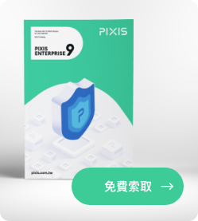

員工人數上千的內湖科技公司，同時為全球代工排名第一的投影機與液晶顯示器大廠，營運據點遍及台灣、中國、美國及日本。
該公司在接觸 PIXIS 前已有購買 IPAM 系統來管理內網的 IP 與收集設備的使用 狀況等相關資訊，以利及時掌握連網設備狀況且遇到異常時管理員可以主動封鎖。並在重要設備使用 IP 綁定 MAC 的政策，防止重要設備與其他電腦 IP 衝突，無法連網。
為了符合資安需求，IT 人員需要定時盤查與整理防毒主機、WSUS 和 AD 上的 資料並與 IPAM 系統內的資料比對出不符合規則的設備，再將這些 MAC 封鎖。 但以目前作法盤點平均需要 1 到 2 個月的時間，且無法主動反應使用者電腦是否未符規，盤點後才會發現未符規設備，造成人力的浪費且無法準確、及時達到資安要求。
討論並瞭解需求與網路環境後，透過 PIXIS ATHENAC 系統的「網域自動授 權」、「外部資料整合」以及「Pre-Check」功能來自動盤查，如不符合管理者設定的符規標準則自動封鎖。
被封鎖的使用者依然可以自行更新防毒、Windows Update以及加入網域等， 待 PIXIS ATHENAC 系統偵測到使用者符合規則後，則會自動放行該設備。
PIXIS ATHENAC 系統涵蓋既有的 IPAM 系統的所有功能，更無需管理員干預就可達到規定的資安標準，大幅降低了 IT 人員盤點的時間。

Neihu Technology, a company with thousands of employees, is also the world's number one OEM manufacturer of projectors and liquid crystal displays, with operations in Taiwan, China, the United States and Japan.
Before contacting PIXIS, the company had purchased an IPAM system to manage the IP of the intranet and collect information about the usage status of the equipment, so as to grasp the status of the connected equipment in time and the administrator can take the initiative to block it in case of abnormalities. And use the policy of IP binding MAC on important equipment to prevent important equipment from conflicting with other computer IP and unable to connect to the Internet.
In order to meet the requirements of information security, IT personnel need to check and sort out the data on the anti-virus host, WSUS and AD regularly and compare it with the data in the IPAM system to identify devices that do not comply with the rules, and then block these MACs. However, it takes an average of 1 to 2 months to take inventory according to the current practice, and it cannot actively respond to whether the user’s computer is not in compliance. After the inventory is found, non-compliant equipment will be found, resulting in waste of manpower and inability to accurately and timely meet the information security requirements .
After discussing and understanding the requirements and network environment, use the PIXIS ATHENAC system's "Domain Automatic Authorization", "External Data Integration" and "Pre-Check" functions to automatically check, and automatically check if it does not meet the compliance standards set by the administrator blockade.
Blocked users can still update antivirus, Windows Update, and join domains by themselves. After the PIXIS ATHENAC system detects that the user meets the rules, it will automatically release the device.
The PIXIS ATHENAC system covers all the functions of the existing IPAM system, and can achieve the required information security standards without the intervention of the administrator, which greatly reduces the time for IT staff to take inventory.